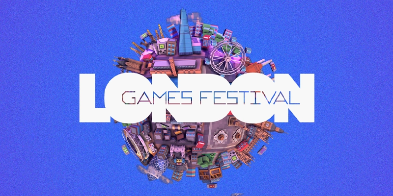
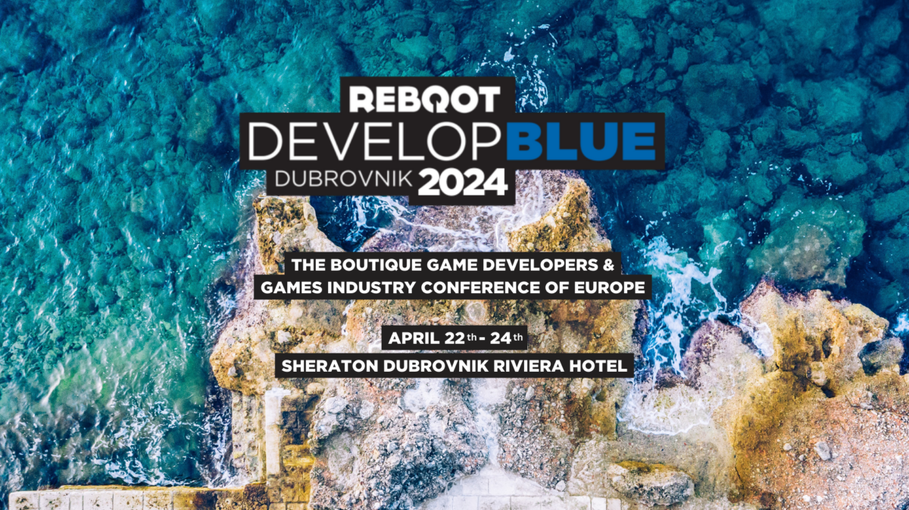
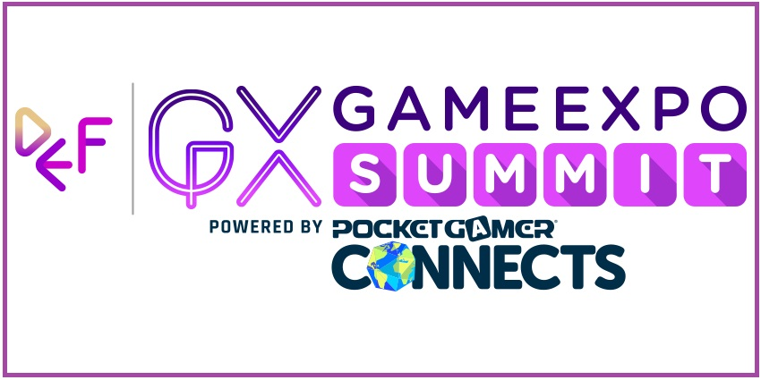
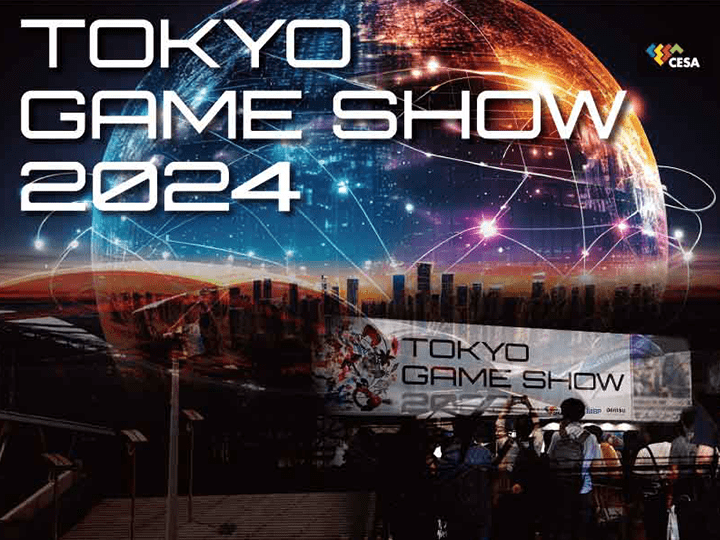

The London Games Festival is an annual event celebrated in East London, showcasing the best in video gaming and interactive entertainment.
Scheduled from April 9 to April 25, 2024, the festival is backed by the Mayor of London and attracts both consumers and industry specialists
globally. This event stands out as a significant gathering for the gaming community, offering insights into the latest trends and technologies
in gaming such as virtual reality and augmented reality.
London Games Festival will run for its ninth year, with a city-wide celebration
that incorporates a programme of activity for global games professionals and players from across the country. Programming across the 16-day
event will be grouped around three strands that will focus on: industry, talent and impact, and gameplay.

The 2024 edition of Reboot Develop Blue in Dubrovnik, Croatia, promises to be a dynamic gathering of game developers and enthusiasts from around the world. Spanning three days, this immersive festival offers attendees a rich tapestry of experiences, including keynote presentations, panel discussions, workshops, and networking opportunities. Renowned industry leaders will share their insights and expertise, covering a diverse range of topics from game design and development to marketing and industry trends. Moreover, the festival's exhibition area will showcase a vibrant array of games, providing developers with a platform to showcase their latest projects and connect with potential partners and collaborators. With its blend of education, inspiration, and celebration of gaming culture, Reboot Develop Blue 2024 is poised to be an unforgettable event for anyone passionate about game development and the gaming industry.

After a triumphant first year in 2023, welcoming over 1,250 attendees, the GameExpo Summit powered by PG Connects is returning on May 1st
to 2nd alongside the Dubai Esports and Games Festival at the Dubai World Trade Centre conference facility in the heart of Dubai!
Once again, the Pocket Gamer Connects team are partnering with the Dubai Economy & Tourism department (DET) to bring the global games industry
an unmissable 2-day conference experience in the glorious city of Dubai.

The Tokyo Game Show (TGS) is one of the largest and most prestigious gaming expos in the world, drawing industry professionals, gamers,
and enthusiasts from around the globe. Hosted annually in Tokyo, Japan, TGS serves as a platform for developers, publishers, and hardware
manufacturers to showcase their latest games, technology, and innovations to a diverse audience.
At TGS, attendees can experience hands-on demos of upcoming games across various platforms, from AAA blockbusters to indie gems. The expo
floor buzzes with excitement as players immerse themselves in the latest gaming experiences, providing valuable feedback to developers and
generating anticipation for upcoming releases.
With its vibrant atmosphere, diverse lineup of exhibitors, and exciting program of events, the Tokyo Game Show continues to be a premier
destination for gamers and industry insiders alike, showcasing the best and brightest of the gaming world and shaping the future of interactive
entertainment.